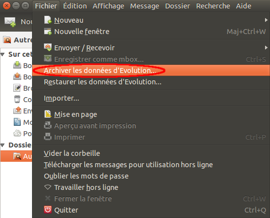
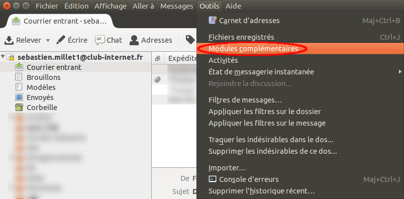
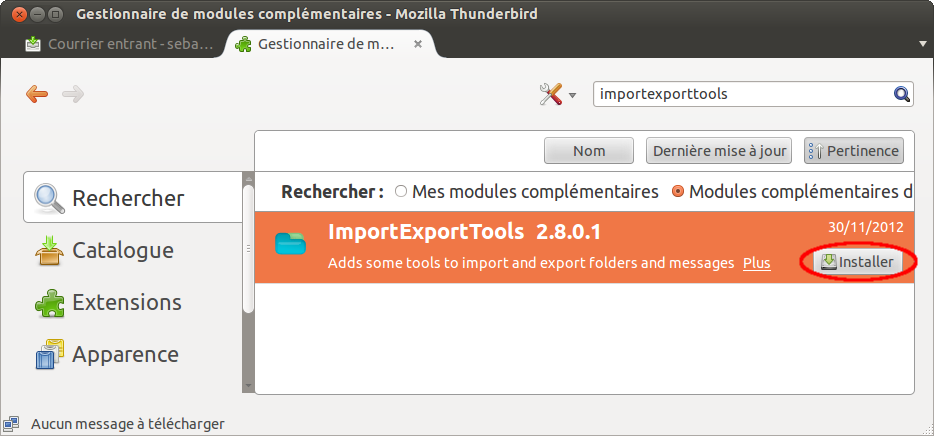
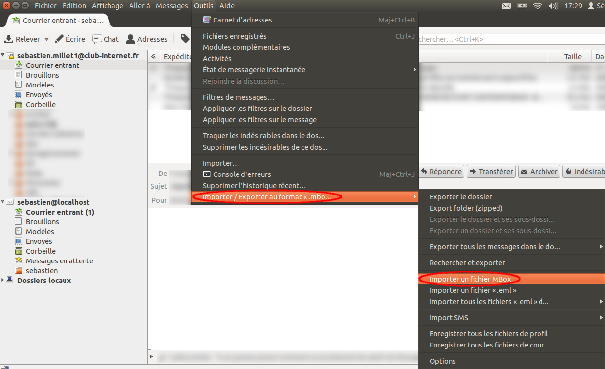
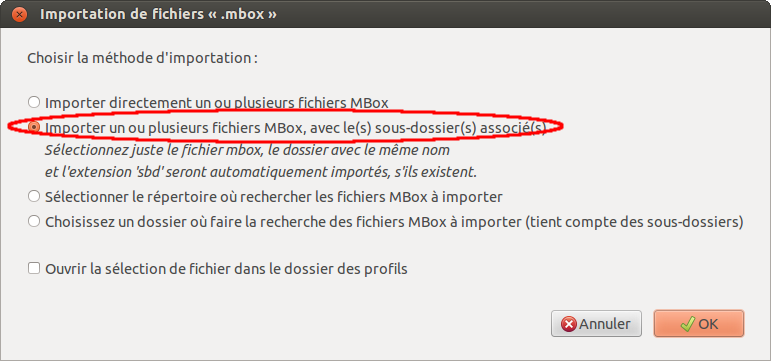
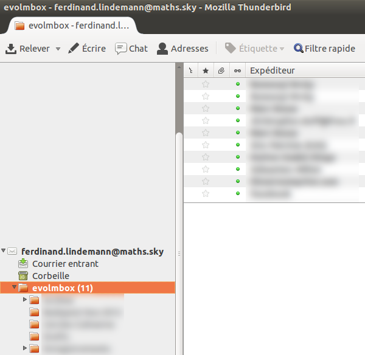

Conversion de la boîte aux lettres d'Evolution à Thunderbird
Document version 1.0
Retour à la page d'accueil
Présentation
Beaucoup de méthodes disponibles sur Internet permettent de convertir des messages depuis Evolution vers Thunderbird.
Souvent un ensemble de messages sélectionnés, parfois des dossiers entiers. Elles nécessitent une action manuelle par
dossier, ce qui est fastidieux.
La méthode présentée ici permet la migration en une fois de la totalité des messages d'Evolution vers Thunderbird,
avec toute l'arborescence des dossiers quel que soit le niveau.
Les contacts ne sont pas traités dans ce qui suit, seuls les emails et leurs dossiers sont migrés d'Evolution à
Thunderbird.
L'opération a été réalisée en mars 2013.
Versions de logiciels avec lesquelles cette méthode a été employée :
- Ubuntu 12.04
- Evolution 3.2.3
- Python 2.7.3
- Thunderbird 17.0.4
- Greffon pour Thunderbird ImportExportTools 2.8.0.1
1. Archiver la boîte aux lettres d'Evolution
Dans Evolution, aller dans le menu Fichier | Archiver les données d'Evolution...
. Cela produit un
fichier de nom evolution-backup-AAAAMMJJ.tar.gz.

2. Extraire le fichier archivé
Extraire le contenu du fichier evolution-backup-AAAAMMJJ.tar.gz (par exemple
evolution-backup-20130205.tar.gz) en ligne de commande avec tar :
sebastien@maison-nblin:~/tmp$ ls -al
total 549492
drwxrwx--- 2 sebastien sebastien 4096 mars 31 14:13 .
drwxr-x--- 73 sebastien sebastien 12288 mars 31 13:34 ..
-rw-rw---- 1 sebastien sebastien 562658850 mars 31 13:42 evolution-backup-20130205.tar.gz
sebastien@maison-nblin:~/tmp$ tar -zxf evolution-backup-20130205.tar.gz
sebastien@maison-nblin:~/tmp$ ls -al
total 549504
drwxrwx--- 4 sebastien sebastien 4096 mars 31 14:14 .
drwxr-x--- 73 sebastien sebastien 12288 mars 31 13:34 ..
drwxrwx--- 3 sebastien sebastien 4096 mars 31 14:14 .config
-rw-rw---- 1 sebastien sebastien 562658850 mars 31 13:42 evolution-backup-20130205.tar.gz
-rw-rw---- 1 sebastien sebastien 60 févr. 5 20:11 evolution.dir
drwxrwx--- 3 sebastien sebastien 4096 mars 31 14:13 .local
|
Cela crée les dossiers .local (caché, l'afficher avec
ls -a) et .config.
Les emails et leur arborescence se trouvent dans le répertoire .local/share/evolution/mail/local.
Note
Il est possible d'utiliser directement le répertoire de travail d'Evolution. Je préfère le passage par une archive pour
garantir la cohérence des données et la réversibilité, cf. application du script corrige-maildir.sh
décrit ci-dessous.
3. Corriger un bug dans les fichiers contenant les emails
Certains emails de l'arborescence extraite lors de l'étape précédente ne sont pas bien interprétés par l'outil d'import de
Thunderbird. Ils sont affichés avec MAILER-DAEMON comme émetteur et aucun en-tête (destinataire, sujet, date/heure...)
utile.
Ce bug est dû à la présence dans certains emails d'un caractère '>' avant le 'From' situé au tout début. Le script
ci-dessous élimine ce caractère surnuméraire dans tous les fichiers de l'arborescence pour que l'import dans Thunderbird
soit correct. J'ai constaté ce défaut sur quelques dizaines d'emails dans une boîte aux lettres de plusieurs milliers de
documents.
Télécharger le fichier ci-dessous et l'enregistrer dans le répertoire où l'archive a été extraite, sous le nom
corrige-maildir.sh, puis l'exécuter dans le répertoire
.local/share/evolution/mail/local.
corrige-maildir.sh
La partie du fichier qui fait la correction est la suivante :
find . -type f ! -regex ".*\(\.cmeta\|\.index\|\.data\).*" | while read f; do
R=`head -n 1 "$f" | egrep -i "^>From\s"`
if [ -n "$R" ]; then
sed -i '1s/^>//' "$f"
echo "Modifié '$f'"
fi
done
|
Exécution du fichier avec la commande sh :
sebastien@maison-nblin:~/tmp$ cd .local/share/evolution/mail/local
sebastien@maison-nblin:~/tmp/.local/share/evolution/mail/local$ sh ../../../../../corrige-maildir.sh
...
sebastien@maison-nblin:~/tmp/.local/share/evolution/mail/local$ cd ../../../../..
|
4. Convertir le dossier extrait au format mbox
L'archive d'Evolution est au format 'maildir', il faut la convertir au format 'mbox'.
Pour faire cette conversion nous allons récupérer et exécuter le script maildir2mbox.py, de Frédéric
Grosshans et Nathan R. Yergler, publié ici :
https://gist.github.com/1709069.
Le script prend deux paramètres, le répertoire maildir à convertir, et le fichier cible. Nous allons utiliser
evolmbox comme nom de fichier cible.
- Récupérer le script à l'URL suivante :
https://gist.github.com/nyergler/1709069/raw/2efc7b5bc1b2ea7de1ccaed469799a5ecb8c4cf8/maildir2mbox.py
et l'enregistrer dans le répertoire où l'archive evolution a été extraite, avec le nom maildir2mbox.py.
- Exécuter le script dans le sous-répertoire contenant les emails organisés par dossier, et choisir
evolmbox comme nom cible.
sebastien@maison-nblin:~/tmp$ ls -al
total 549508
drwxrwx--- 4 sebastien sebastien 4096 mars 31 14:16 .
drwxr-x--- 73 sebastien sebastien 12288 mars 31 13:34 ..
drwxrwx--- 3 sebastien sebastien 4096 mars 31 14:14 .config
-rw-rw---- 1 sebastien sebastien 2548 mars 31 14:16 corrige-maildir.sh
-rw-rw---- 1 sebastien sebastien 562658850 mars 31 13:42 evolution-backup-20130205.tar.gz
-rw-rw---- 1 sebastien sebastien 60 févr. 5 20:11 evolution.dir
drwxrwx--- 3 sebastien sebastien 4096 mars 31 14:13 .local
sebastien@maison-nblin:~/tmp$ python maildir2mbox.py .local/share/evolution/mail/local evolmbox
...
|
5. Récapitulatif des étapes précédentes
(Archivage d'Evolution dans le répertoire ~/tmp)
sebastien@maison-nblin:~/tmp$ ls -al
total 549492
drwxrwx--- 2 sebastien sebastien 4096 mars 31 14:39 .
drwxr-x--- 73 sebastien sebastien 12288 mars 31 13:34 ..
-rw-rw---- 1 sebastien sebastien 562658850 mars 31 13:42 evolution-backup-20130205.tar.gz
sebastien@maison-nblin:~/tmp$ tar -zxf evolution-backup-20130205.tar.gz
sebastien@maison-nblin:~/tmp$ ls -al
total 549504
drwxrwx--- 4 sebastien sebastien 4096 mars 31 14:40 .
drwxr-x--- 73 sebastien sebastien 12288 mars 31 13:34 ..
drwxrwx--- 3 sebastien sebastien 4096 mars 31 14:40 .config
-rw-rw---- 1 sebastien sebastien 562658850 mars 31 13:42 evolution-backup-20130205.tar.gz
-rw-rw---- 1 sebastien sebastien 60 févr. 5 20:11 evolution.dir
drwxrwx--- 3 sebastien sebastien 4096 mars 31 14:39 .local
(Téléchargement depuis le navigateur du fichier corrige-maildir.sh)
sebastien@maison-nblin:~/tmp$ ls -al
total 549508
drwxrwx--- 4 sebastien sebastien 4096 mars 31 14:40 .
drwxr-x--- 73 sebastien sebastien 12288 mars 31 13:34 ..
drwxrwx--- 3 sebastien sebastien 4096 mars 31 14:40 .config
-rw-rw---- 1 sebastien sebastien 2548 mars 31 14:40 corrige-maildir.sh
-rw-rw---- 1 sebastien sebastien 562658850 mars 31 13:42 evolution-backup-20130205.tar.gz
-rw-rw---- 1 sebastien sebastien 60 févr. 5 20:11 evolution.dir
drwxrwx--- 3 sebastien sebastien 4096 mars 31 14:39 .local
sebastien@maison-nblin:~/tmp$ cd .local/share/evolution/mail/local
sebastien@maison-nblin:~/tmp/.local/share/evolution/mail/local$ sh ../../../../../corrige-maildir.sh
Modifié './.Archive.Vim/cur/1319369831.2453_15.maison-nblin:2,S'
Modifié './.Archive.Vim/cur/1319369831.2453_18.maison-nblin:2,S'
Modifié './.Archive.Vim/cur/1319369831.2453_6.maison-nblin:2,S'
Modifié './.Archive.Vim/cur/1319369831.2453_8.maison-nblin:2,S'
Modifié './.Archive.Vim/cur/1319369831.2453_1.maison-nblin:2,S'
...
Modifié './.Personnes.Truc Machin/cur/1319369808.2453_12.maison-nblin:2,S'
Modifié './.Archive.2006/cur/1319369834.2453_4.maison-nblin:2,S'
sebastien@maison-nblin:~/tmp/.local/share/evolution/mail/local$ cd ../../../../..
sebastien@maison-nblin:~/tmp$ ls -al
total 549508
drwxrwx--- 4 sebastien sebastien 4096 mars 31 14:40 .
drwxr-x--- 73 sebastien sebastien 12288 mars 31 13:34 ..
drwxrwx--- 3 sebastien sebastien 4096 mars 31 14:40 .config
-rw-rw---- 1 sebastien sebastien 2548 mars 31 14:40 corrige-maildir.sh
-rw-rw---- 1 sebastien sebastien 562658850 mars 31 13:42 evolution-backup-20130205.tar.gz
-rw-rw---- 1 sebastien sebastien 60 févr. 5 20:11 evolution.dir
drwxrwx--- 3 sebastien sebastien 4096 mars 31 14:39 .local
(Téléchargement depuis le navigateur du fichier maildir2mbox.py)
sebastien@maison-nblin:~/tmp$ ls -al
total 549512
drwxrwx--- 4 sebastien sebastien 4096 mars 31 14:42 .
drwxr-x--- 73 sebastien sebastien 12288 mars 31 13:34 ..
drwxrwx--- 3 sebastien sebastien 4096 mars 31 14:40 .config
-rw-rw---- 1 sebastien sebastien 2548 mars 31 14:40 corrige-maildir.sh
-rw-rw---- 1 sebastien sebastien 562658850 mars 31 13:42 evolution-backup-20130205.tar.gz
-rw-rw---- 1 sebastien sebastien 60 févr. 5 20:11 evolution.dir
drwxrwx--- 3 sebastien sebastien 4096 mars 31 14:39 .local
-rw-rw---- 1 sebastien sebastien 2177 mars 31 14:42 maildir2mbox.py
sebastien@maison-nblin:~/tmp$ python maildir2mbox.py .local/share/evolution/mail/local evolmbox
.local/share/evolution/mail/local -> evolmbox
| .Sent -> evolmbox.sbd/Sent
| .Archive -> evolmbox.sbd/Archive
| .Enregistrements.ababab -> evolmbox.sbd/Enregistrements.sbd/ababab
| .Personnes.Machine Bidule -> evolmbox.sbd/Personnes.sbd/Machin Bidule
...
| .cacccccac.acacçcbc babaca -> adcbbacd.sbd/cacccccac.sbd/acacçcbc babaca
| .acabbda.accacdabacd babcd -> adcbbacd.sbd/acabbda.sbd/accacdabacd babcd
| .acabbda.dbb -> adcbbacd.caa/acabbda.sbd/dbb
| .accabbcdcabacdc.acaa -> adcbbacd.sbd/accabbcdcabacdc.sbd/acaa
| .cacccccac.caabca ddbbdcd -> adcbbacd.sbd/cacccccac.sbd/caabca ddbbdcd
| .accabbcdcabacdc.bba -> adcbbacd.sbd/accabbcdcabacdc.sbd/bba
...
| .cacccccac.baca bccca -> adcbbacd.sbd/cacccccac.caa/baca bccca
| .cacccccac.bdbbac babaca -> adcbbacd.sbd/cacccccac.sbd/bdbbac babaca
| .accabbcdcabacdc.ccbaabbcbcdac -> adcbbacd.sbd/accabbcdcabacdc.sbd/ccbaabbcbcdac
| .cacccccac.bacba ccadacc -> adcbbacd.sbd/cacccccac.sbd/bacba ccadacc
| .acabbda.bbcôdc 2006 -> adcbbacd.sbd/acabbda.sbd/bbcôdc 2006
| .cacccccac.ababc ad bccbcda bbbbad -> adcbbacd.sbd/cacccccac.sbd/ababc ad bccbcda bbbbad
...
Done
sebastien@maison-nblin:~/tmp$ ls -al
total 549744
drwxrwx--- 5 sebastien sebastien 4096 mars 31 14:43 .
drwxr-x--- 73 sebastien sebastien 12288 mars 31 13:34 ..
drwxrwx--- 3 sebastien sebastien 4096 mars 31 14:40 .config
-rw-rw---- 1 sebastien sebastien 2548 mars 31 14:40 corrige-maildir.sh
-rw-rw---- 1 sebastien sebastien 230931 mars 31 14:43 evolmbox
drwxrwx--- 21 sebastien sebastien 4096 mars 31 14:44 evolmbox.sbd
-rw-rw---- 1 sebastien sebastien 562658850 mars 31 13:42 evolution-backup-20130205.tar.gz
-rw-rw---- 1 sebastien sebastien 60 févr. 5 20:11 evolution.dir
drwxrwx--- 3 sebastien sebastien 4096 mars 31 14:39 .local
-rw-rw---- 1 sebastien sebastien 2177 mars 31 14:42 maildir2mbox.py
sebastien@maison-nblin:~/tmp$
|
Les manipulations précédentes ont créé un fichier, evolmbox, et un répertoire,
evolmbox.sbd, que nous allons importer dans Thunderbird.
6. Installer le greffon ImportExportTools dans Thunderbird
1. Dans Thunderbird, aller dans le menu Outils | Modules complémentaires.

2. Rechercher ImportExportTools dans le catalogue et cliquer sur le bouton
Installer.

7. Réaliser l'import dans Thunderbird
1. Après redémarrage de Thunderbird, aller dans le menu (ajouté par le greffon ImportExportTools)
Outils | Importer / Exporter au format «.mbo... | Importer un fichier Mbox.
Note
L'import est effectué dans le dossier sélectionné au moment où le menu est cliqué.
D'autre part, l'import n'est pas possible avec un compte de type IMAP ou groupe de discussion. Test effectué avec succès
sur un compte de type POP3.

2. Sélectionner l'option
Importer un ou plusieurs fichiers MBox, avec le(s) sous-dossier(s) associé(s) et cliquer sur OK.

Sélectionner le fichier evolmbox et cliquer sur Ouvrir.
L'import est effectué dans le dossier evolmbox.

C'est fini !